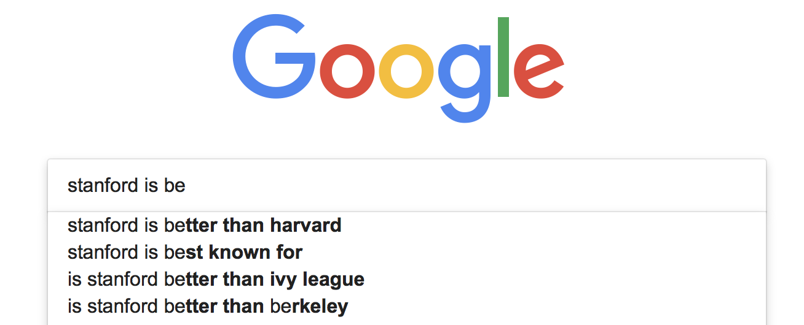

import math
import random
import numpy as np
import pandas as pd
import nltk
nltk.data.path.append('.')
In this assignment, you will build an auto-complete system. Auto-complete system is something you may see every day - When you google something, you often have suggestions to help you complete your search. - When you are writing an email, you get suggestions telling you possible endings to your sentence.
By the end of this assignment, you will develop a prototype of such a system.

Outline
- 1 Load and Preprocess Data
- 1.1: Load the data
- 1.2 Pre-process the data
- 2 Develop n-gram based language models
- 3 Perplexity
- 4 Build an auto-complete system
A key building block for an auto-complete system is a language model. A language model assigns the probability to a sequence of words, in a way that more “likely” sequences receive higher scores. For example, >“I have a pen” is expected to have a higher probability than >“I am a pen” since the first one seems to be a more natural sentence in the real world.
You can take advantage of this probability calculation to develop an auto-complete system.
Suppose the user typed >“I eat scrambled” Then you can find a word x such that “I eat scrambled x” receives the highest probability. If x = “eggs”, the sentence would be >“I eat scrambled eggs”
While a variety of language models have been developed, this assignment uses N-grams, a simple but powerful method for language modeling. - N-grams are also used in machine translation and speech recognition.
Here are the steps of this assignment:
- Load and preprocess data
- Load and tokenize data.
- Split the sentences into train and test sets.
- Replace words with a low frequency by an unknown marker
<unk>.
- Develop N-gram based language models
- Compute the count of n-grams from a given data set.
- Estimate the conditional probability of a next word with k-smoothing.
- Evaluate the N-gram models by computing the perplexity score.
- Use your own model to suggest an upcoming word given your sentence.
## Part 1: Load and Preprocess Data
### Part 1.1: Load the data You will use twitter data. Load the data and view the first few sentences by running the next cell.
Notice that data is a long string that contains many many tweets. Observe that there is a line break “” between tweets.
with open("en_US.twitter.txt", "r") as f:
data = f.read()
print("Data type:", type(data))
print("Number of letters:", len(data))
print("First 300 letters of the data")
print("-------")
display(data[0:300])
print("-------")
print("Last 300 letters of the data")
print("-------")
display(data[-300:])
print("-------")Data type: <class 'str'>
Number of letters: 3335477
First 300 letters of the data
-------"How are you? Btw thanks for the RT. You gonna be in DC anytime soon? Love to see you. Been way, way too long.\nWhen you meet someone special... you'll know. Your heart will beat more rapidly and you'll smile for no reason.\nthey've decided its more fun if I don't.\nSo Tired D; Played Lazer Tag & Ran A "-------
Last 300 letters of the data
-------"ust had one a few weeks back....hopefully we will be back soon! wish you the best yo\nColombia is with an 'o'...“: We now ship to 4 countries in South America (fist pump). Please welcome Columbia to the Stunner Family”\n#GutsiestMovesYouCanMake Giving a cat a bath.\nCoffee after 5 was a TERRIBLE idea.\n"-------### Part 1.2 Pre-process the data
Preprocess this data with the following steps:
- Split data into sentences using “” as the delimiter.
- Split each sentence into tokens. Note that in this assignment we use “token” and “words” interchangeably.
- Assign sentences into train or test sets.
- Find tokens that appear at least N times in the training data.
- Replace tokens that appear less than N times by
<unk>
Note: we omit validation data in this exercise. - In real applications, we should hold a part of data as a validation set and use it to tune our training. - We skip this process for simplicity.
Split data into sentences.
Hints
- Use str.split
# UNQ_C1 (UNIQUE CELL IDENTIFIER, DO NOT EDIT)
### GRADED_FUNCTION: split_to_sentences ###
def split_to_sentences(data):
"""
Split data by linebreak "\n"
Args:
data: str
Returns:
A list of sentences
"""
### START CODE HERE (Replace instances of 'None' with your code) ###
sentences = None
### END CODE HERE ###
# Additional clearning (This part is already implemented)
# - Remove leading and trailing spaces from each sentence
# - Drop sentences if they are empty strings.
sentences = [s.strip() for s in sentences]
sentences = [s for s in sentences if len(s) > 0]
return sentences # test your code
x = """
I have a pen.\nI have an apple. \nAh\nApple pen.\n
"""
print(x)
split_to_sentences(x)
I have a pen.
I have an apple.
Ah
Apple pen.
--------------------------------------------------------------------------- TypeError Traceback (most recent call last) Cell In[4], line 7 2 x = """ 3 I have a pen.\nI have an apple. \nAh\nApple pen.\n 4 """ 5 print(x) ----> 7 split_to_sentences(x) Cell In[3], line 20, in split_to_sentences(data) 14 sentences = None 15 ### END CODE HERE ### 16 17 # Additional clearning (This part is already implemented) 18 # - Remove leading and trailing spaces from each sentence 19 # - Drop sentences if they are empty strings. ---> 20 sentences = [s.strip() for s in sentences] 21 sentences = [s for s in sentences if len(s) > 0] 23 return sentences TypeError: 'NoneType' object is not iterable
Expected answer:
['I have a pen.', 'I have an apple.', 'Ah', 'Apple pen.']### Exercise 02 The next step is to tokenize sentences (split a sentence into a list of words). - Convert all tokens into lower case so that words which are capitalized (for example, at the start of a sentence) in the original text are treated the same as the lowercase versions of the words. - Append each tokenized list of words into a list of tokenized sentences.
Hints
- Use str.lower to convert strings to lowercase.
- Please use nltk.word_tokenize to split sentences into tokens.
- If you used str.split insteaad of nltk.word_tokenize, there are additional edge cases to handle, such as the punctuation (comma, period) that follows a word.
# UNQ_C2 (UNIQUE CELL IDENTIFIER, DO NOT EDIT)
### GRADED_FUNCTION: tokenize_sentences ###
def tokenize_sentences(sentences):
"""
Tokenize sentences into tokens (words)
Args:
sentences: List of strings
Returns:
List of lists of tokens
"""
# Initialize the list of lists of tokenized sentences
tokenized_sentences = []
### START CODE HERE (Replace instances of 'None' with your code) ###
# Go through each sentence
for sentence in None:
# Convert to lowercase letters
sentence = None
# Convert into a list of words
tokenized = None
# append the list of words to the list of lists
None
### END CODE HERE ###
return tokenized_sentences# test your code
sentences = ["Sky is blue.", "Leaves are green.", "Roses are red."]
tokenize_sentences(sentences)--------------------------------------------------------------------------- TypeError Traceback (most recent call last) Cell In[6], line 3 1 # test your code 2 sentences = ["Sky is blue.", "Leaves are green.", "Roses are red."] ----> 3 tokenize_sentences(sentences) Cell In[5], line 19, in tokenize_sentences(sentences) 15 tokenized_sentences = [] 16 ### START CODE HERE (Replace instances of 'None' with your code) ### 17 18 # Go through each sentence ---> 19 for sentence in None: 20 21 # Convert to lowercase letters 22 sentence = None 24 # Convert into a list of words TypeError: 'NoneType' object is not iterable
Expected output
[['sky', 'is', 'blue', '.'],
['leaves', 'are', 'green', '.'],
['roses', 'are', 'red', '.']]Use the two functions that you have just implemented to get the tokenized data. - split the data into sentences - tokenize those sentences
# UNQ_C3 (UNIQUE CELL IDENTIFIER, DO NOT EDIT)
### GRADED_FUNCTION: get_tokenized_data ###
def get_tokenized_data(data):
"""
Make a list of tokenized sentences
Args:
data: String
Returns:
List of lists of tokens
"""
### START CODE HERE (Replace instances of 'None' with your code) ###
# Get the sentences by splitting up the data
sentences = None
# Get the list of lists of tokens by tokenizing the sentences
tokenized_sentences = None
### END CODE HERE ###
return tokenized_sentences# test your function
x = "Sky is blue.\nLeaves are green\nRoses are red."
get_tokenized_data(x)Expected outcome
[['sky', 'is', 'blue', '.'],
['leaves', 'are', 'green'],
['roses', 'are', 'red', '.']]Split into train and test sets
Now run the cell below to split data into training and test sets.
tokenized_data = get_tokenized_data(data)
random.seed(87)
random.shuffle(tokenized_data)
train_size = int(len(tokenized_data) * 0.8)
train_data = tokenized_data[0:train_size]
test_data = tokenized_data[train_size:]--------------------------------------------------------------------------- TypeError Traceback (most recent call last) Cell In[9], line 3 1 tokenized_data = get_tokenized_data(data) 2 random.seed(87) ----> 3 random.shuffle(tokenized_data) 5 train_size = int(len(tokenized_data) * 0.8) 6 train_data = tokenized_data[0:train_size] File /usr/lib/python3.10/random.py:391, in Random.shuffle(self, x, random) 389 if random is None: 390 randbelow = self._randbelow --> 391 for i in reversed(range(1, len(x))): 392 # pick an element in x[:i+1] with which to exchange x[i] 393 j = randbelow(i + 1) 394 x[i], x[j] = x[j], x[i] TypeError: object of type 'NoneType' has no len()
print("{} data are split into {} train and {} test set".format(
len(tokenized_data), len(train_data), len(test_data)))
print("First training sample:")
print(train_data[0])
print("First test sample")
print(test_data[0])--------------------------------------------------------------------------- TypeError Traceback (most recent call last) Cell In[10], line 2 1 print("{} data are split into {} train and {} test set".format( ----> 2 len(tokenized_data), len(train_data), len(test_data))) 4 print("First training sample:") 5 print(train_data[0]) TypeError: object of type 'NoneType' has no len()
Expected output
47961 data are split into 38368 train and 9593 test set
First training sample:
['i', 'personally', 'would', 'like', 'as', 'our', 'official', 'glove', 'of', 'the', 'team', 'local', 'company', 'and', 'quality', 'production']
First test sample
['that', 'picture', 'i', 'just', 'seen', 'whoa', 'dere', '!', '!', '>', '>', '>', '>', '>', '>', '>']You won’t use all the tokens (words) appearing in the data for training. Instead, you will use the more frequently used words.
- You will focus on the words that appear at least N times in the data. - First count how many times each word appears in the data.
You will need a double for-loop, one for sentences and the other for tokens within a sentence.
Hints
- If you decide to import and use defaultdict, remember to cast the dictionary back to a regular ‘dict’ before returning it.
# UNQ_C4 (UNIQUE CELL IDENTIFIER, DO NOT EDIT)
### GRADED_FUNCTION: count_words ###
def count_words(tokenized_sentences):
"""
Count the number of word appearence in the tokenized sentences
Args:
tokenized_sentences: List of lists of strings
Returns:
dict that maps word (str) to the frequency (int)
"""
word_counts = {}
### START CODE HERE (Replace instances of 'None' with your code) ###
# Loop through each sentence
for sentence in None: # complete this line
# Go through each token in the sentence
for token in None: # complete this line
# If the token is not in the dictionary yet, set the count to 1
if None: # complete this line
word_counts[token] = None
# If the token is already in the dictionary, increment the count by 1
else:
word_counts[token] += None
### END CODE HERE ###
return word_counts# test your code
tokenized_sentences = [['sky', 'is', 'blue', '.'],
['leaves', 'are', 'green', '.'],
['roses', 'are', 'red', '.']]
count_words(tokenized_sentences)--------------------------------------------------------------------------- TypeError Traceback (most recent call last) Cell In[12], line 5 1 # test your code 2 tokenized_sentences = [['sky', 'is', 'blue', '.'], 3 ['leaves', 'are', 'green', '.'], 4 ['roses', 'are', 'red', '.']] ----> 5 count_words(tokenized_sentences) Cell In[11], line 18, in count_words(tokenized_sentences) 14 word_counts = {} 15 ### START CODE HERE (Replace instances of 'None' with your code) ### 16 17 # Loop through each sentence ---> 18 for sentence in None: # complete this line 19 20 # Go through each token in the sentence 21 for token in None: # complete this line 22 23 # If the token is not in the dictionary yet, set the count to 1 24 if None: # complete this line TypeError: 'NoneType' object is not iterable
Expected output
Note that the order may differ.
{'sky': 1,
'is': 1,
'blue': 1,
'.': 3,
'leaves': 1,
'are': 2,
'green': 1,
'roses': 1,
'red': 1}Handling ‘Out of Vocabulary’ words
If your model is performing autocomplete, but encounters a word that it never saw during training, it won’t have an input word to help it determine the next word to suggest. The model will not be able to predict the next word because there are no counts for the current word. - This ‘new’ word is called an ‘unknown word’, or out of vocabulary (OOV) words. - The percentage of unknown words in the test set is called the OOV rate.
To handle unknown words during prediction, use a special token to represent all unknown words ‘unk’. - Modify the training data so that it has some ‘unknown’ words to train on. - Words to convert into “unknown” words are those that do not occur very frequently in the training set. - Create a list of the most frequent words in the training set, called the closed vocabulary . - Convert all the other words that are not part of the closed vocabulary to the token ‘unk’.
You will now create a function that takes in a text document and a threshold count_threshold. - Any word whose count is greater than or equal to the threshold count_threshold is kept in the closed vocabulary. - Returns the word closed vocabulary list.
# UNQ_C5 (UNIQUE CELL IDENTIFIER, DO NOT EDIT)
### GRADED_FUNCTION: get_words_with_nplus_frequency ###
def get_words_with_nplus_frequency(tokenized_sentences, count_threshold):
"""
Find the words that appear N times or more
Args:
tokenized_sentences: List of lists of sentences
count_threshold: minimum number of occurrences for a word to be in the closed vocabulary.
Returns:
List of words that appear N times or more
"""
# Initialize an empty list to contain the words that
# appear at least 'minimum_freq' times.
closed_vocab = []
# Get the word couts of the tokenized sentences
# Use the function that you defined earlier to count the words
word_counts = count_words(tokenized_sentences)
### START CODE HERE (Replace instances of 'None' with your code) ###
# for each word and its count
for word, cnt in None: # complete this line
# check that the word's count
# is at least as great as the minimum count
if None:
# append the word to the list
None
### END CODE HERE ###
return closed_vocab# test your code
tokenized_sentences = [['sky', 'is', 'blue', '.'],
['leaves', 'are', 'green', '.'],
['roses', 'are', 'red', '.']]
tmp_closed_vocab = get_words_with_nplus_frequency(tokenized_sentences, count_threshold=2)
print(f"Closed vocabulary:")
print(tmp_closed_vocab)--------------------------------------------------------------------------- TypeError Traceback (most recent call last) Cell In[14], line 5 1 # test your code 2 tokenized_sentences = [['sky', 'is', 'blue', '.'], 3 ['leaves', 'are', 'green', '.'], 4 ['roses', 'are', 'red', '.']] ----> 5 tmp_closed_vocab = get_words_with_nplus_frequency(tokenized_sentences, count_threshold=2) 6 print(f"Closed vocabulary:") 7 print(tmp_closed_vocab) Cell In[13], line 20, in get_words_with_nplus_frequency(tokenized_sentences, count_threshold) 16 closed_vocab = [] 18 # Get the word couts of the tokenized sentences 19 # Use the function that you defined earlier to count the words ---> 20 word_counts = count_words(tokenized_sentences) 22 ### START CODE HERE (Replace instances of 'None' with your code) ### 23 24 # for each word and its count 25 for word, cnt in None: # complete this line 26 27 # check that the word's count 28 # is at least as great as the minimum count Cell In[11], line 18, in count_words(tokenized_sentences) 14 word_counts = {} 15 ### START CODE HERE (Replace instances of 'None' with your code) ### 16 17 # Loop through each sentence ---> 18 for sentence in None: # complete this line 19 20 # Go through each token in the sentence 21 for token in None: # complete this line 22 23 # If the token is not in the dictionary yet, set the count to 1 24 if None: # complete this line TypeError: 'NoneType' object is not iterable
Expected output
Closed vocabulary:
['.', 'are']The words that appear count_threshold times or more are in the closed vocabulary. - All other words are regarded as unknown. - Replace words not in the closed vocabulary with the token <unk>.
# UNQ_C6 (UNIQUE CELL IDENTIFIER, DO NOT EDIT)
### GRADED_FUNCTION: replace_oov_words_by_unk ###
def replace_oov_words_by_unk(tokenized_sentences, vocabulary, unknown_token="<unk>"):
"""
Replace words not in the given vocabulary with '<unk>' token.
Args:
tokenized_sentences: List of lists of strings
vocabulary: List of strings that we will use
unknown_token: A string representing unknown (out-of-vocabulary) words
Returns:
List of lists of strings, with words not in the vocabulary replaced
"""
# Place vocabulary into a set for faster search
vocabulary = set(vocabulary)
# Initialize a list that will hold the sentences
# after less frequent words are replaced by the unknown token
replaced_tokenized_sentences = []
# Go through each sentence
for sentence in tokenized_sentences:
# Initialize the list that will contain
# a single sentence with "unknown_token" replacements
replaced_sentence = []
### START CODE HERE (Replace instances of 'None' with your code) ###
# for each token in the sentence
for token in None: # complete this line
# Check if the token is in the closed vocabulary
if token in None: # complete this line
# If so, append the word to the replaced_sentence
None
else:
# otherwise, append the unknown token instead
None
### END CODE HERE ###
# Append the list of tokens to the list of lists
replaced_tokenized_sentences.append(replaced_sentence)
return replaced_tokenized_sentencestokenized_sentences = [["dogs", "run"], ["cats", "sleep"]]
vocabulary = ["dogs", "sleep"]
tmp_replaced_tokenized_sentences = replace_oov_words_by_unk(tokenized_sentences, vocabulary)
print(f"Original sentence:")
print(tokenized_sentences)
print(f"tokenized_sentences with less frequent words converted to '<unk>':")
print(tmp_replaced_tokenized_sentences)--------------------------------------------------------------------------- TypeError Traceback (most recent call last) Cell In[16], line 3 1 tokenized_sentences = [["dogs", "run"], ["cats", "sleep"]] 2 vocabulary = ["dogs", "sleep"] ----> 3 tmp_replaced_tokenized_sentences = replace_oov_words_by_unk(tokenized_sentences, vocabulary) 4 print(f"Original sentence:") 5 print(tokenized_sentences) Cell In[15], line 32, in replace_oov_words_by_unk(tokenized_sentences, vocabulary, unknown_token) 28 replaced_sentence = [] 29 ### START CODE HERE (Replace instances of 'None' with your code) ### 30 31 # for each token in the sentence ---> 32 for token in None: # complete this line 33 34 # Check if the token is in the closed vocabulary 35 if token in None: # complete this line 36 # If so, append the word to the replaced_sentence 37 None TypeError: 'NoneType' object is not iterable
Expected answer
Original sentence:
[['dogs', 'run'], ['cats', 'sleep']]
tokenized_sentences with less frequent words converted to '<unk>':
[['dogs', '<unk>'], ['<unk>', 'sleep']]Now we are ready to process our data by combining the functions that you just implemented.
- Find tokens that appear at least count_threshold times in the training data.
- Replace tokens that appear less than count_threshold times by “<unk>” both for training and test data.
# UNQ_C7 (UNIQUE CELL IDENTIFIER, DO NOT EDIT)
### GRADED_FUNCTION: preprocess_data ###
def preprocess_data(train_data, test_data, count_threshold):
"""
Preprocess data, i.e.,
- Find tokens that appear at least N times in the training data.
- Replace tokens that appear less than N times by "<unk>" both for training and test data.
Args:
train_data, test_data: List of lists of strings.
count_threshold: Words whose count is less than this are
treated as unknown.
Returns:
Tuple of
- training data with low frequent words replaced by "<unk>"
- test data with low frequent words replaced by "<unk>"
- vocabulary of words that appear n times or more in the training data
"""
### START CODE HERE (Replace instances of 'None' with your code) ###
# Get the closed vocabulary using the train data
vocabulary = None
# For the train data, replace less common words with "<unk>"
train_data_replaced = None
# For the test data, replace less common words with "<unk>"
test_data_replaced = None
### END CODE HERE ###
return train_data_replaced, test_data_replaced, vocabulary# test your code
tmp_train = [['sky', 'is', 'blue', '.'],
['leaves', 'are', 'green']]
tmp_test = [['roses', 'are', 'red', '.']]
tmp_train_repl, tmp_test_repl, tmp_vocab = preprocess_data(tmp_train,
tmp_test,
count_threshold = 1)
print("tmp_train_repl")
print(tmp_train_repl)
print()
print("tmp_test_repl")
print(tmp_test_repl)
print()
print("tmp_vocab")
print(tmp_vocab)tmp_train_repl
None
tmp_test_repl
None
tmp_vocab
NoneExpected outcome
tmp_train_repl
[['sky', 'is', 'blue', '.'], ['leaves', 'are', 'green']]
tmp_test_repl
[['<unk>', 'are', '<unk>', '.']]
tmp_vocab
['sky', 'is', 'blue', '.', 'leaves', 'are', 'green']Preprocess the train and test data
Run the cell below to complete the preprocessing both for training and test sets.
minimum_freq = 2
train_data_processed, test_data_processed, vocabulary = preprocess_data(train_data,
test_data,
minimum_freq)--------------------------------------------------------------------------- NameError Traceback (most recent call last) Cell In[19], line 2 1 minimum_freq = 2 ----> 2 train_data_processed, test_data_processed, vocabulary = preprocess_data(train_data, 3 test_data, 4 minimum_freq) NameError: name 'train_data' is not defined
print("First preprocessed training sample:")
print(train_data_processed[0])
print()
print("First preprocessed test sample:")
print(test_data_processed[0])
print()
print("First 10 vocabulary:")
print(vocabulary[0:10])
print()
print("Size of vocabulary:", len(vocabulary))First preprocessed training sample:--------------------------------------------------------------------------- NameError Traceback (most recent call last) Cell In[20], line 2 1 print("First preprocessed training sample:") ----> 2 print(train_data_processed[0]) 3 print() 4 print("First preprocessed test sample:") NameError: name 'train_data_processed' is not defined
Expected output
First preprocessed training sample:
['i', 'personally', 'would', 'like', 'as', 'our', 'official', 'glove', 'of', 'the', 'team', 'local', 'company', 'and', 'quality', 'production']
First preprocessed test sample:
['that', 'picture', 'i', 'just', 'seen', 'whoa', 'dere', '!', '!', '>', '>', '>', '>', '>', '>', '>']
First 10 vocabulary:
['i', 'personally', 'would', 'like', 'as', 'our', 'official', 'glove', 'of', 'the']
Size of vocabulary: 14821You are done with the preprocessing section of the assignment. Objects train_data_processed, test_data_processed, and vocabulary will be used in the rest of the exercises.
## Part 2: Develop n-gram based language models
In this section, you will develop the n-grams language model. - Assume the probability of the next word depends only on the previous n-gram. - The previous n-gram is the series of the previous ‘n’ words.
The conditional probability for the word at position ‘t’ in the sentence, given that the words preceding it are w_{t-1}, w_{t-2} \cdots w_{t-n} is:
P(w_t | w_{t-1}\dots w_{t-n}) \tag{1}
You can estimate this probability by counting the occurrences of these series of words in the training data. - The probability can be estimated as a ratio, where - The numerator is the number of times word ‘t’ appears after words t-1 through t-n appear in the training data. - The denominator is the number of times word t-1 through t-n appears in the training data.
\hat{P}(w_t | w_{t-1}\dots w_{t-n}) = \frac{C(w_{t-1}\dots w_{t-n}, w_n)}{C(w_{t-1}\dots w_{t-n})} \tag{2}
- The function C(\cdots) denotes the number of occurence of the given sequence.
- \hat{P} means the estimation of P.
- Notice that denominator of the equation (2) is the number of occurence of the previous n words, and the numerator is the same sequence followed by the word w_t.
Later, you will modify the equation (2) by adding k-smoothing, which avoids errors when any counts are zero.
The equation (2) tells us that to estimate probabilities based on n-grams, you need the counts of n-grams (for denominator) and (n+1)-grams (for numerator).
### Exercise 08 Next, you will implement a function that computes the counts of n-grams for an arbitrary number n.
When computing the counts for n-grams, prepare the sentence beforehand by prepending n-1 starting markers “<s>” to indicate the beginning of the sentence.
- For example, in the bi-gram model (N=2), a sequence with two start tokens “<s><s>” should predict the first word of a sentence. - So, if the sentence is “I like food”, modify it to be “<s><s> I like food”. - Also prepare the sentence for counting by appending an end token “<e>” so that the model can predict when to finish a sentence.
Technical note: In this implementation, you will store the counts as a dictionary. - The key of each key-value pair in the dictionary is a tuple of n words (and not a list) - The value in the key-value pair is the number of occurrences.
- The reason for using a tuple as a key instead of a list is because a list in Python is a mutable object (it can be changed after it is first created). A tuple is “immutable”, so it cannot be altered after it is first created. This makes a tuple suitable as a data type for the key in a dictionary.
Hints
- To prepend or append, you can create lists and concatenate them using the + operator
-
To create a list of a repeated value, you can follow this syntax:
[‘a’] * 3to get[‘a’,‘a’,‘a’] -
To set the range for index ‘i’, think of this example: An n-gram where n=2 (bigram), and the sentence is length N=5 (including two start tokens and one end token). So the index positions are
[0,1,2,3,4]. The largest index ‘i’ where a bigram can start is at position i=3, because the word tokens at position 3 and 4 will form the bigram. -
Remember that the
range()function excludes the value that is used for the maximum of the range.range(3)produces (0,1,2) but excludes 3.
# UNQ_C8 (UNIQUE CELL IDENTIFIER, DO NOT EDIT)
### GRADED FUNCTION: count_n_grams ###
def count_n_grams(data, n, start_token='<s>', end_token = '<e>'):
"""
Count all n-grams in the data
Args:
data: List of lists of words
n: number of words in a sequence
Returns:
A dictionary that maps a tuple of n-words to its frequency
"""
# Initialize dictionary of n-grams and their counts
n_grams = {}
### START CODE HERE (Replace instances of 'None' with your code) ###
# Go through each sentence in the data
for sentence in None: # complete this line
# prepend start token n times, and append <e> one time
sentence = None
# convert list to tuple
# So that the sequence of words can be used as
# a key in the dictionary
sentence = None
# Use 'i' to indicate the start of the n-gram
# from index 0
# to the last index where the end of the n-gram
# is within the sentence.
for i in range(None): # complete this line
# Get the n-gram from i to i+n
n_gram = None
# check if the n-gram is in the dictionary
if n_gram in None: # complete this line
# Increment the count for this n-gram
n_grams[n_gram] += None
else:
# Initialize this n-gram count to 1
n_grams[n_gram] = None
### END CODE HERE ###
return n_grams# test your code
# CODE REVIEW COMMENT: Outcome does not match expected outcome
sentences = [['i', 'like', 'a', 'cat'],
['this', 'dog', 'is', 'like', 'a', 'cat']]
print("Uni-gram:")
print(count_n_grams(sentences, 1))
print("Bi-gram:")
print(count_n_grams(sentences, 2))Uni-gram:--------------------------------------------------------------------------- TypeError Traceback (most recent call last) Cell In[22], line 6 3 sentences = [['i', 'like', 'a', 'cat'], 4 ['this', 'dog', 'is', 'like', 'a', 'cat']] 5 print("Uni-gram:") ----> 6 print(count_n_grams(sentences, 1)) 7 print("Bi-gram:") 8 print(count_n_grams(sentences, 2)) Cell In[21], line 21, in count_n_grams(data, n, start_token, end_token) 16 n_grams = {} 18 ### START CODE HERE (Replace instances of 'None' with your code) ### 19 20 # Go through each sentence in the data ---> 21 for sentence in None: # complete this line 22 23 # prepend start token n times, and append <e> one time 24 sentence = None 26 # convert list to tuple 27 # So that the sequence of words can be used as 28 # a key in the dictionary TypeError: 'NoneType' object is not iterable
Expected outcome:
Uni-gram:
{('<s>',): 2, ('i',): 1, ('like',): 2, ('a',): 2, ('cat',): 2, ('<e>',): 2, ('this',): 1, ('dog',): 1, ('is',): 1}
Bi-gram:
{('<s>', '<s>'): 2, ('<s>', 'i'): 1, ('i', 'like'): 1, ('like', 'a'): 2, ('a', 'cat'): 2, ('cat', '<e>'): 2, ('<s>', 'this'): 1, ('this', 'dog'): 1, ('dog', 'is'): 1, ('is', 'like'): 1}Next, estimate the probability of a word given the prior ‘n’ words using the n-gram counts.
\hat{P}(w_t | w_{t-1}\dots w_{t-n}) = \frac{C(w_{t-1}\dots w_{t-n}, w_n)}{C(w_{t-1}\dots w_{t-n})} \tag{2}
This formula doesn’t work when a count of an n-gram is zero.. - Suppose we encounter an n-gram that did not occur in the training data.
- Then, the equation (2) cannot be evaluated (it becomes zero divided by zero).
A way to handle zero counts is to add k-smoothing.
- K-smoothing adds a positive constant k to each numerator and k \times |V| in the denominator, where |V| is the number of words in the vocabulary.
\hat{P}(w_t | w_{t-1}\dots w_{t-n}) = \frac{C(w_{t-1}\dots w_{t-n}, w_n) + k}{C(w_{t-1}\dots w_{t-n}) + k|V|} \tag{3}
For n-grams that have a zero count, the equation (3) becomes \frac{1}{|V|}. - This means that any n-gram with zero count has the same probability of \frac{1}{|V|}.
Define a function that computes the probability estimate (3) from n-gram counts and a constant k.
- The function takes in a dictionary ‘n_gram_counts’, where the key is the n-gram and the value is the count of that n-gram.
- The function also takes another dictionary n_plus1_gram_counts, which you’ll use to find the count for the previous n-gram plus the current word.
Hints
-
To define a tuple containing a single value, add a comma after that value. For example:
(‘apple’,)is a tuple containing a single string ‘apple’ - To concatenate two tuples, use the ‘+’ operator
- words
# UNQ_C9 (UNIQUE CELL IDENTIFIER, DO NOT EDIT)
### GRADED FUNCTION: estimate_probability ###
def estimate_probability(word, previous_n_gram,
n_gram_counts, n_plus1_gram_counts, vocabulary_size, k=1.0):
"""
Estimate the probabilities of a next word using the n-gram counts with k-smoothing
Args:
word: next word
previous_n_gram: A sequence of words of length n
n_gram_counts: Dictionary of counts of n-grams
n_plus1_gram_counts: Dictionary of counts of (n+1)-grams
vocabulary_size: number of words in the vocabulary
k: positive constant, smoothing parameter
Returns:
A probability
"""
# convert list to tuple to use it as a dictionary key
previous_n_gram = tuple(previous_n_gram)
### START CODE HERE (Replace instances of 'None' with your code) ###
# Set the denominator
# If the previous n-gram exists in the dictionary of n-gram counts,
# Get its count. Otherwise set the count to zero
# Use the dictionary that has counts for n-grams
previous_n_gram_count = None
# Calculate the denominator using the count of the previous n gram
# and apply k-smoothing
denominator = None
# Define n plus 1 gram as the previous n-gram plus the current word as a tuple
n_plus1_gram = None
# Set the count to the count in the dictionary,
# otherwise 0 if not in the dictionary
# use the dictionary that has counts for the n-gram plus current word
n_plus1_gram_count = None
# Define the numerator use the count of the n-gram plus current word,
# and apply smoothing
numerator = None
# Calculate the probability as the numerator divided by denominator
probability = None
### END CODE HERE ###
return probability# test your code
sentences = [['i', 'like', 'a', 'cat'],
['this', 'dog', 'is', 'like', 'a', 'cat']]
unique_words = list(set(sentences[0] + sentences[1]))
unigram_counts = count_n_grams(sentences, 1)
bigram_counts = count_n_grams(sentences, 2)
tmp_prob = estimate_probability("cat", "a", unigram_counts, bigram_counts, len(unique_words), k=1)
print(f"The estimated probability of word 'cat' given the previous n-gram 'a' is: {tmp_prob:.4f}")--------------------------------------------------------------------------- TypeError Traceback (most recent call last) Cell In[24], line 6 2 sentences = [['i', 'like', 'a', 'cat'], 3 ['this', 'dog', 'is', 'like', 'a', 'cat']] 4 unique_words = list(set(sentences[0] + sentences[1])) ----> 6 unigram_counts = count_n_grams(sentences, 1) 7 bigram_counts = count_n_grams(sentences, 2) 8 tmp_prob = estimate_probability("cat", "a", unigram_counts, bigram_counts, len(unique_words), k=1) Cell In[21], line 21, in count_n_grams(data, n, start_token, end_token) 16 n_grams = {} 18 ### START CODE HERE (Replace instances of 'None' with your code) ### 19 20 # Go through each sentence in the data ---> 21 for sentence in None: # complete this line 22 23 # prepend start token n times, and append <e> one time 24 sentence = None 26 # convert list to tuple 27 # So that the sequence of words can be used as 28 # a key in the dictionary TypeError: 'NoneType' object is not iterable
Expected output
The estimated probability of word 'cat' given the previous n-gram 'a' is: 0.3333Estimate probabilities for all words
The function defined below loops over all words in vocabulary to calculate probabilities for all possible words. - This function is provided for you.
def estimate_probabilities(previous_n_gram, n_gram_counts, n_plus1_gram_counts, vocabulary, k=1.0):
"""
Estimate the probabilities of next words using the n-gram counts with k-smoothing
Args:
previous_n_gram: A sequence of words of length n
n_gram_counts: Dictionary of counts of (n+1)-grams
n_plus1_gram_counts: Dictionary of counts of (n+1)-grams
vocabulary: List of words
k: positive constant, smoothing parameter
Returns:
A dictionary mapping from next words to the probability.
"""
# convert list to tuple to use it as a dictionary key
previous_n_gram = tuple(previous_n_gram)
# add <e> <unk> to the vocabulary
# <s> is not needed since it should not appear as the next word
vocabulary = vocabulary + ["<e>", "<unk>"]
vocabulary_size = len(vocabulary)
probabilities = {}
for word in vocabulary:
probability = estimate_probability(word, previous_n_gram,
n_gram_counts, n_plus1_gram_counts,
vocabulary_size, k=k)
probabilities[word] = probability
return probabilities# test your code
sentences = [['i', 'like', 'a', 'cat'],
['this', 'dog', 'is', 'like', 'a', 'cat']]
unique_words = list(set(sentences[0] + sentences[1]))
unigram_counts = count_n_grams(sentences, 1)
bigram_counts = count_n_grams(sentences, 2)
estimate_probabilities("a", unigram_counts, bigram_counts, unique_words, k=1)--------------------------------------------------------------------------- TypeError Traceback (most recent call last) Cell In[26], line 5 2 sentences = [['i', 'like', 'a', 'cat'], 3 ['this', 'dog', 'is', 'like', 'a', 'cat']] 4 unique_words = list(set(sentences[0] + sentences[1])) ----> 5 unigram_counts = count_n_grams(sentences, 1) 6 bigram_counts = count_n_grams(sentences, 2) 7 estimate_probabilities("a", unigram_counts, bigram_counts, unique_words, k=1) Cell In[21], line 21, in count_n_grams(data, n, start_token, end_token) 16 n_grams = {} 18 ### START CODE HERE (Replace instances of 'None' with your code) ### 19 20 # Go through each sentence in the data ---> 21 for sentence in None: # complete this line 22 23 # prepend start token n times, and append <e> one time 24 sentence = None 26 # convert list to tuple 27 # So that the sequence of words can be used as 28 # a key in the dictionary TypeError: 'NoneType' object is not iterable
Expected output
{'cat': 0.2727272727272727,
'i': 0.09090909090909091,
'this': 0.09090909090909091,
'a': 0.09090909090909091,
'is': 0.09090909090909091,
'like': 0.09090909090909091,
'dog': 0.09090909090909091,
'<e>': 0.09090909090909091,
'<unk>': 0.09090909090909091}# Additional test
trigram_counts = count_n_grams(sentences, 3)
estimate_probabilities(["<s>", "<s>"], bigram_counts, trigram_counts, unique_words, k=1)--------------------------------------------------------------------------- TypeError Traceback (most recent call last) Cell In[27], line 2 1 # Additional test ----> 2 trigram_counts = count_n_grams(sentences, 3) 3 estimate_probabilities(["<s>", "<s>"], bigram_counts, trigram_counts, unique_words, k=1) Cell In[21], line 21, in count_n_grams(data, n, start_token, end_token) 16 n_grams = {} 18 ### START CODE HERE (Replace instances of 'None' with your code) ### 19 20 # Go through each sentence in the data ---> 21 for sentence in None: # complete this line 22 23 # prepend start token n times, and append <e> one time 24 sentence = None 26 # convert list to tuple 27 # So that the sequence of words can be used as 28 # a key in the dictionary TypeError: 'NoneType' object is not iterable
Expected output
{'cat': 0.09090909090909091,
'i': 0.18181818181818182,
'this': 0.18181818181818182,
'a': 0.09090909090909091,
'is': 0.09090909090909091,
'like': 0.09090909090909091,
'dog': 0.09090909090909091,
'<e>': 0.09090909090909091,
'<unk>': 0.09090909090909091}Count and probability matrices
As we have seen so far, the n-gram counts computed above are sufficient for computing the probabilities of the next word.
- It can be more intuitive to present them as count or probability matrices. - The functions defined in the next cells return count or probability matrices. - This function is provided for you.
def make_count_matrix(n_plus1_gram_counts, vocabulary):
# add <e> <unk> to the vocabulary
# <s> is omitted since it should not appear as the next word
vocabulary = vocabulary + ["<e>", "<unk>"]
# obtain unique n-grams
n_grams = []
for n_plus1_gram in n_plus1_gram_counts.keys():
n_gram = n_plus1_gram[0:-1]
n_grams.append(n_gram)
n_grams = list(set(n_grams))
# mapping from n-gram to row
row_index = {n_gram:i for i, n_gram in enumerate(n_grams)}
# mapping from next word to column
col_index = {word:j for j, word in enumerate(vocabulary)}
nrow = len(n_grams)
ncol = len(vocabulary)
count_matrix = np.zeros((nrow, ncol))
for n_plus1_gram, count in n_plus1_gram_counts.items():
n_gram = n_plus1_gram[0:-1]
word = n_plus1_gram[-1]
if word not in vocabulary:
continue
i = row_index[n_gram]
j = col_index[word]
count_matrix[i, j] = count
count_matrix = pd.DataFrame(count_matrix, index=n_grams, columns=vocabulary)
return count_matrixsentences = [['i', 'like', 'a', 'cat'],
['this', 'dog', 'is', 'like', 'a', 'cat']]
unique_words = list(set(sentences[0] + sentences[1]))
bigram_counts = count_n_grams(sentences, 2)
print('bigram counts')
display(make_count_matrix(bigram_counts, unique_words))--------------------------------------------------------------------------- TypeError Traceback (most recent call last) Cell In[29], line 4 1 sentences = [['i', 'like', 'a', 'cat'], 2 ['this', 'dog', 'is', 'like', 'a', 'cat']] 3 unique_words = list(set(sentences[0] + sentences[1])) ----> 4 bigram_counts = count_n_grams(sentences, 2) 6 print('bigram counts') 7 display(make_count_matrix(bigram_counts, unique_words)) Cell In[21], line 21, in count_n_grams(data, n, start_token, end_token) 16 n_grams = {} 18 ### START CODE HERE (Replace instances of 'None' with your code) ### 19 20 # Go through each sentence in the data ---> 21 for sentence in None: # complete this line 22 23 # prepend start token n times, and append <e> one time 24 sentence = None 26 # convert list to tuple 27 # So that the sequence of words can be used as 28 # a key in the dictionary TypeError: 'NoneType' object is not iterable
Expected output
bigram counts
cat i this a is like dog <e> <unk>
(<s>,) 0.0 1.0 1.0 0.0 0.0 0.0 0.0 0.0 0.0
(a,) 2.0 0.0 0.0 0.0 0.0 0.0 0.0 0.0 0.0
(this,) 0.0 0.0 0.0 0.0 0.0 0.0 1.0 0.0 0.0
(like,) 0.0 0.0 0.0 2.0 0.0 0.0 0.0 0.0 0.0
(dog,) 0.0 0.0 0.0 0.0 1.0 0.0 0.0 0.0 0.0
(cat,) 0.0 0.0 0.0 0.0 0.0 0.0 0.0 2.0 0.0
(is,) 0.0 0.0 0.0 0.0 0.0 1.0 0.0 0.0 0.0
(i,) 0.0 0.0 0.0 0.0 0.0 1.0 0.0 0.0 0.0# Show trigram counts
print('\ntrigram counts')
trigram_counts = count_n_grams(sentences, 3)
display(make_count_matrix(trigram_counts, unique_words))
trigram counts--------------------------------------------------------------------------- TypeError Traceback (most recent call last) Cell In[30], line 3 1 # Show trigram counts 2 print('\ntrigram counts') ----> 3 trigram_counts = count_n_grams(sentences, 3) 4 display(make_count_matrix(trigram_counts, unique_words)) Cell In[21], line 21, in count_n_grams(data, n, start_token, end_token) 16 n_grams = {} 18 ### START CODE HERE (Replace instances of 'None' with your code) ### 19 20 # Go through each sentence in the data ---> 21 for sentence in None: # complete this line 22 23 # prepend start token n times, and append <e> one time 24 sentence = None 26 # convert list to tuple 27 # So that the sequence of words can be used as 28 # a key in the dictionary TypeError: 'NoneType' object is not iterable
Expected output
trigram counts
cat i this a is like dog <e> <unk>
(dog, is) 0.0 0.0 0.0 0.0 0.0 1.0 0.0 0.0 0.0
(this, dog) 0.0 0.0 0.0 0.0 1.0 0.0 0.0 0.0 0.0
(a, cat) 0.0 0.0 0.0 0.0 0.0 0.0 0.0 2.0 0.0
(like, a) 2.0 0.0 0.0 0.0 0.0 0.0 0.0 0.0 0.0
(is, like) 0.0 0.0 0.0 1.0 0.0 0.0 0.0 0.0 0.0
(<s>, i) 0.0 0.0 0.0 0.0 0.0 1.0 0.0 0.0 0.0
(i, like) 0.0 0.0 0.0 1.0 0.0 0.0 0.0 0.0 0.0
(<s>, <s>) 0.0 1.0 1.0 0.0 0.0 0.0 0.0 0.0 0.0
(<s>, this) 0.0 0.0 0.0 0.0 0.0 0.0 1.0 0.0 0.0The following function calculates the probabilities of each word given the previous n-gram, and stores this in matrix form. - This function is provided for you.
def make_probability_matrix(n_plus1_gram_counts, vocabulary, k):
count_matrix = make_count_matrix(n_plus1_gram_counts, unique_words)
count_matrix += k
prob_matrix = count_matrix.div(count_matrix.sum(axis=1), axis=0)
return prob_matrixsentences = [['i', 'like', 'a', 'cat'],
['this', 'dog', 'is', 'like', 'a', 'cat']]
unique_words = list(set(sentences[0] + sentences[1]))
bigram_counts = count_n_grams(sentences, 2)
print("bigram probabilities")
display(make_probability_matrix(bigram_counts, unique_words, k=1))--------------------------------------------------------------------------- TypeError Traceback (most recent call last) Cell In[32], line 4 1 sentences = [['i', 'like', 'a', 'cat'], 2 ['this', 'dog', 'is', 'like', 'a', 'cat']] 3 unique_words = list(set(sentences[0] + sentences[1])) ----> 4 bigram_counts = count_n_grams(sentences, 2) 5 print("bigram probabilities") 6 display(make_probability_matrix(bigram_counts, unique_words, k=1)) Cell In[21], line 21, in count_n_grams(data, n, start_token, end_token) 16 n_grams = {} 18 ### START CODE HERE (Replace instances of 'None' with your code) ### 19 20 # Go through each sentence in the data ---> 21 for sentence in None: # complete this line 22 23 # prepend start token n times, and append <e> one time 24 sentence = None 26 # convert list to tuple 27 # So that the sequence of words can be used as 28 # a key in the dictionary TypeError: 'NoneType' object is not iterable
print("trigram probabilities")
trigram_counts = count_n_grams(sentences, 3)
display(make_probability_matrix(trigram_counts, unique_words, k=1))trigram probabilities--------------------------------------------------------------------------- TypeError Traceback (most recent call last) Cell In[33], line 2 1 print("trigram probabilities") ----> 2 trigram_counts = count_n_grams(sentences, 3) 3 display(make_probability_matrix(trigram_counts, unique_words, k=1)) Cell In[21], line 21, in count_n_grams(data, n, start_token, end_token) 16 n_grams = {} 18 ### START CODE HERE (Replace instances of 'None' with your code) ### 19 20 # Go through each sentence in the data ---> 21 for sentence in None: # complete this line 22 23 # prepend start token n times, and append <e> one time 24 sentence = None 26 # convert list to tuple 27 # So that the sequence of words can be used as 28 # a key in the dictionary TypeError: 'NoneType' object is not iterable
Confirm that you obtain the same results as for the estimate_probabilities function that you implemented.
In this section, you will generate the perplexity score to evaluate your model on the test set. - You will also use back-off when needed. - Perplexity is used as an evaluation metric of your language model. - To calculate the the perplexity score of the test set on an n-gram model, use:
PP(W) =\sqrt[N]{ \prod_{t=n+1}^N \frac{1}{P(w_t | w_{t-n} \cdots w_{t-1})} } \tag{4}
- where N is the length of the sentence.
- n is the number of words in the n-gram (e.g. 2 for a bigram).
- In math, the numbering starts at one and not zero.
In code, array indexing starts at zero, so the code will use ranges for t according to this formula:
PP(W) =\sqrt[N]{ \prod_{t=n}^{N-1} \frac{1}{P(w_t | w_{t-n} \cdots w_{t-1})} } \tag{4.1}
The higher the probabilities are, the lower the perplexity will be. - The more the n-grams tell us about the sentence, the lower the perplexity score will be.
### Exercise 10 Compute the perplexity score given an N-gram count matrix and a sentence.
Hints
-
Remember that
range(2,4)produces the integers [2, 3] (and excludes 4).
# UNQ_C10 (UNIQUE CELL IDENTIFIER, DO NOT EDIT)
# GRADED FUNCTION: calculate_perplexity
def calculate_perplexity(sentence, n_gram_counts, n_plus1_gram_counts, vocabulary_size, k=1.0):
"""
Calculate perplexity for a list of sentences
Args:
sentence: List of strings
n_gram_counts: Dictionary of counts of (n+1)-grams
n_plus1_gram_counts: Dictionary of counts of (n+1)-grams
vocabulary_size: number of unique words in the vocabulary
k: Positive smoothing constant
Returns:
Perplexity score
"""
# length of previous words
n = len(list(n_gram_counts.keys())[0])
# prepend <s> and append <e>
sentence = ["<s>"] * n + sentence + ["<e>"]
# Cast the sentence from a list to a tuple
sentence = tuple(sentence)
# length of sentence (after adding <s> and <e> tokens)
N = len(sentence)
# The variable p will hold the product
# that is calculated inside the n-root
# Update this in the code below
product_pi = 1.0
### START CODE HERE (Replace instances of 'None' with your code) ###
# Index t ranges from n to N - 1, inclusive on both ends
for t in range(None, None): # complete this line
# get the n-gram preceding the word at position t
n_gram = None
# get the word at position t
word = None
# Estimate the probability of the word given the n-gram
# using the n-gram counts, n-plus1-gram counts,
# vocabulary size, and smoothing constant
probability = None
# Update the product of the probabilities
# This 'product_pi' is a cumulative product
# of the (1/P) factors that are calculated in the loop
product_pi *= None
# Take the Nth root of the product
perplexity = None
### END CODE HERE ###
return perplexity# test your code
sentences = [['i', 'like', 'a', 'cat'],
['this', 'dog', 'is', 'like', 'a', 'cat']]
unique_words = list(set(sentences[0] + sentences[1]))
unigram_counts = count_n_grams(sentences, 1)
bigram_counts = count_n_grams(sentences, 2)
perplexity_train1 = calculate_perplexity(sentences[0],
unigram_counts, bigram_counts,
len(unique_words), k=1.0)
print(f"Perplexity for first train sample: {perplexity_train1:.4f}")
test_sentence = ['i', 'like', 'a', 'dog']
perplexity_test = calculate_perplexity(test_sentence,
unigram_counts, bigram_counts,
len(unique_words), k=1.0)
print(f"Perplexity for test sample: {perplexity_test:.4f}")--------------------------------------------------------------------------- TypeError Traceback (most recent call last) Cell In[35], line 7 3 sentences = [['i', 'like', 'a', 'cat'], 4 ['this', 'dog', 'is', 'like', 'a', 'cat']] 5 unique_words = list(set(sentences[0] + sentences[1])) ----> 7 unigram_counts = count_n_grams(sentences, 1) 8 bigram_counts = count_n_grams(sentences, 2) 11 perplexity_train1 = calculate_perplexity(sentences[0], 12 unigram_counts, bigram_counts, 13 len(unique_words), k=1.0) Cell In[21], line 21, in count_n_grams(data, n, start_token, end_token) 16 n_grams = {} 18 ### START CODE HERE (Replace instances of 'None' with your code) ### 19 20 # Go through each sentence in the data ---> 21 for sentence in None: # complete this line 22 23 # prepend start token n times, and append <e> one time 24 sentence = None 26 # convert list to tuple 27 # So that the sequence of words can be used as 28 # a key in the dictionary TypeError: 'NoneType' object is not iterable
Expected Output
Perplexity for first train sample: 2.8040
Perplexity for test sample: 3.9654Note: If your sentence is really long, there will be underflow when multiplying many fractions. - To handle longer sentences, modify your implementation to take the sum of the log of the probabilities.
## Part 4: Build an auto-complete system
In this section, you will combine the language models developed so far to implement an auto-complete system.
### Exercise 11 Compute probabilities for all possible next words and suggest the most likely one. - This function also take an optional argument start_with, which specifies the first few letters of the next words.
Hints
-
estimate_probabilitiesreturns a dictionary where the key is a word and the value is the word’s probability. -
Use
str1.startswith(str2)to determine if a string starts with the letters of another string. For example,‘learning’.startswith(‘lea’)returns True, whereas‘learning’.startswith(‘ear’)returns False. There are two additional parameters instr.startswith(), but you can use the default values for those parameters in this case.
# UNQ_C11 (UNIQUE CELL IDENTIFIER, DO NOT EDIT)
# GRADED FUNCTION: suggest_a_word
def suggest_a_word(previous_tokens, n_gram_counts, n_plus1_gram_counts, vocabulary, k=1.0, start_with=None):
"""
Get suggestion for the next word
Args:
previous_tokens: The sentence you input where each token is a word. Must have length > n
n_gram_counts: Dictionary of counts of (n+1)-grams
n_plus1_gram_counts: Dictionary of counts of (n+1)-grams
vocabulary: List of words
k: positive constant, smoothing parameter
start_with: If not None, specifies the first few letters of the next word
Returns:
A tuple of
- string of the most likely next word
- corresponding probability
"""
# length of previous words
n = len(list(n_gram_counts.keys())[0])
# From the words that the user already typed
# get the most recent 'n' words as the previous n-gram
previous_n_gram = previous_tokens[-n:]
# Estimate the probabilities that each word in the vocabulary
# is the next word,
# given the previous n-gram, the dictionary of n-gram counts,
# the dictionary of n plus 1 gram counts, and the smoothing constant
probabilities = estimate_probabilities(previous_n_gram,
n_gram_counts, n_plus1_gram_counts,
vocabulary, k=k)
# Initialize suggested word to None
# This will be set to the word with highest probability
suggestion = None
# Initialize the highest word probability to 0
# this will be set to the highest probability
# of all words to be suggested
max_prob = 0
### START CODE HERE (Replace instances of 'None' with your code) ###
# For each word and its probability in the probabilities dictionary:
for word, prob in None: # complete this line
# If the optional start_with string is set
if None: # complete this line
# Check if the beginning of word does not match with the letters in 'start_with'
if None: # complete this line
# if they don't match, skip this word (move onto the next word)
None # complete this line
# Check if this word's probability
# is greater than the current maximum probability
if None: # complete this line
# If so, save this word as the best suggestion (so far)
suggestion = None
# Save the new maximum probability
max_prob = None
### END CODE HERE
return suggestion, max_prob# test your code
sentences = [['i', 'like', 'a', 'cat'],
['this', 'dog', 'is', 'like', 'a', 'cat']]
unique_words = list(set(sentences[0] + sentences[1]))
unigram_counts = count_n_grams(sentences, 1)
bigram_counts = count_n_grams(sentences, 2)
previous_tokens = ["i", "like"]
tmp_suggest1 = suggest_a_word(previous_tokens, unigram_counts, bigram_counts, unique_words, k=1.0)
print(f"The previous words are 'i like',\n\tand the suggested word is `{tmp_suggest1[0]}` with a probability of {tmp_suggest1[1]:.4f}")
print()
# test your code when setting the starts_with
tmp_starts_with = 'c'
tmp_suggest2 = suggest_a_word(previous_tokens, unigram_counts, bigram_counts, unique_words, k=1.0, start_with=tmp_starts_with)
print(f"The previous words are 'i like', the suggestion must start with `{tmp_starts_with}`\n\tand the suggested word is `{tmp_suggest2[0]}` with a probability of {tmp_suggest2[1]:.4f}")--------------------------------------------------------------------------- TypeError Traceback (most recent call last) Cell In[37], line 6 2 sentences = [['i', 'like', 'a', 'cat'], 3 ['this', 'dog', 'is', 'like', 'a', 'cat']] 4 unique_words = list(set(sentences[0] + sentences[1])) ----> 6 unigram_counts = count_n_grams(sentences, 1) 7 bigram_counts = count_n_grams(sentences, 2) 9 previous_tokens = ["i", "like"] Cell In[21], line 21, in count_n_grams(data, n, start_token, end_token) 16 n_grams = {} 18 ### START CODE HERE (Replace instances of 'None' with your code) ### 19 20 # Go through each sentence in the data ---> 21 for sentence in None: # complete this line 22 23 # prepend start token n times, and append <e> one time 24 sentence = None 26 # convert list to tuple 27 # So that the sequence of words can be used as 28 # a key in the dictionary TypeError: 'NoneType' object is not iterable
Expected output
The previous words are 'i like',
and the suggested word is `a` with a probability of 0.2727
The previous words are 'i like', the suggestion must start with `c`
and the suggested word is `cat` with a probability of 0.0909Get multiple suggestions
The function defined below loop over varioud n-gram models to get multiple suggestions.
def get_suggestions(previous_tokens, n_gram_counts_list, vocabulary, k=1.0, start_with=None):
model_counts = len(n_gram_counts_list)
suggestions = []
for i in range(model_counts-1):
n_gram_counts = n_gram_counts_list[i]
n_plus1_gram_counts = n_gram_counts_list[i+1]
suggestion = suggest_a_word(previous_tokens, n_gram_counts,
n_plus1_gram_counts, vocabulary,
k=k, start_with=start_with)
suggestions.append(suggestion)
return suggestions# test your code
sentences = [['i', 'like', 'a', 'cat'],
['this', 'dog', 'is', 'like', 'a', 'cat']]
unique_words = list(set(sentences[0] + sentences[1]))
unigram_counts = count_n_grams(sentences, 1)
bigram_counts = count_n_grams(sentences, 2)
trigram_counts = count_n_grams(sentences, 3)
quadgram_counts = count_n_grams(sentences, 4)
qintgram_counts = count_n_grams(sentences, 5)
n_gram_counts_list = [unigram_counts, bigram_counts, trigram_counts, quadgram_counts, qintgram_counts]
previous_tokens = ["i", "like"]
tmp_suggest3 = get_suggestions(previous_tokens, n_gram_counts_list, unique_words, k=1.0)
print(f"The previous words are 'i like', the suggestions are:")
display(tmp_suggest3)--------------------------------------------------------------------------- TypeError Traceback (most recent call last) Cell In[39], line 6 2 sentences = [['i', 'like', 'a', 'cat'], 3 ['this', 'dog', 'is', 'like', 'a', 'cat']] 4 unique_words = list(set(sentences[0] + sentences[1])) ----> 6 unigram_counts = count_n_grams(sentences, 1) 7 bigram_counts = count_n_grams(sentences, 2) 8 trigram_counts = count_n_grams(sentences, 3) Cell In[21], line 21, in count_n_grams(data, n, start_token, end_token) 16 n_grams = {} 18 ### START CODE HERE (Replace instances of 'None' with your code) ### 19 20 # Go through each sentence in the data ---> 21 for sentence in None: # complete this line 22 23 # prepend start token n times, and append <e> one time 24 sentence = None 26 # convert list to tuple 27 # So that the sequence of words can be used as 28 # a key in the dictionary TypeError: 'NoneType' object is not iterable
Suggest multiple words using n-grams of varying length
Congratulations! You have developed all building blocks for implementing your own auto-complete systems.
Let’s see this with n-grams of varying lengths (unigrams, bigrams, trigrams, 4-grams…6-grams).
n_gram_counts_list = []
for n in range(1, 6):
print("Computing n-gram counts with n =", n, "...")
n_model_counts = count_n_grams(train_data_processed, n)
n_gram_counts_list.append(n_model_counts)Computing n-gram counts with n = 1 ...--------------------------------------------------------------------------- NameError Traceback (most recent call last) Cell In[40], line 4 2 for n in range(1, 6): 3 print("Computing n-gram counts with n =", n, "...") ----> 4 n_model_counts = count_n_grams(train_data_processed, n) 5 n_gram_counts_list.append(n_model_counts) NameError: name 'train_data_processed' is not defined
previous_tokens = ["i", "am", "to"]
tmp_suggest4 = get_suggestions(previous_tokens, n_gram_counts_list, vocabulary, k=1.0)
print(f"The previous words are {previous_tokens}, the suggestions are:")
display(tmp_suggest4)The previous words are ['i', 'am', 'to'], the suggestions are:[]previous_tokens = ["i", "want", "to", "go"]
tmp_suggest5 = get_suggestions(previous_tokens, n_gram_counts_list, vocabulary, k=1.0)
print(f"The previous words are {previous_tokens}, the suggestions are:")
display(tmp_suggest5)The previous words are ['i', 'want', 'to', 'go'], the suggestions are:[]previous_tokens = ["hey", "how", "are"]
tmp_suggest6 = get_suggestions(previous_tokens, n_gram_counts_list, vocabulary, k=1.0)
print(f"The previous words are {previous_tokens}, the suggestions are:")
display(tmp_suggest6)The previous words are ['hey', 'how', 'are'], the suggestions are:[]previous_tokens = ["hey", "how", "are", "you"]
tmp_suggest7 = get_suggestions(previous_tokens, n_gram_counts_list, vocabulary, k=1.0)
print(f"The previous words are {previous_tokens}, the suggestions are:")
display(tmp_suggest7)The previous words are ['hey', 'how', 'are', 'you'], the suggestions are:[]previous_tokens = ["hey", "how", "are", "you"]
tmp_suggest8 = get_suggestions(previous_tokens, n_gram_counts_list, vocabulary, k=1.0, start_with="d")
print(f"The previous words are {previous_tokens}, the suggestions are:")
display(tmp_suggest8)The previous words are ['hey', 'how', 'are', 'you'], the suggestions are:[]Congratulations!
You’ve completed this assignment by building an autocomplete model using an n-gram language model!
Please continue onto the fourth and final week of this course!
Citation
BibTeX citation:
@online{bochman2020,
author = {Bochman, Oren},
title = {Language {Models:} {Auto-Complete}},
date = {2020-10-23},
url = {https://orenbochman.github.io/notes-nlp/posts/c2w3/assignment.html},
langid = {en}
}
For attribution, please cite this work as:
Bochman, Oren. 2020. “Language Models: Auto-Complete.”
October 23, 2020. https://orenbochman.github.io/notes-nlp/posts/c2w3/assignment.html.